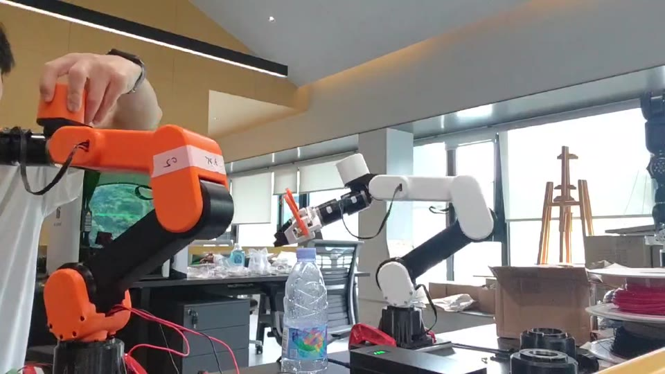
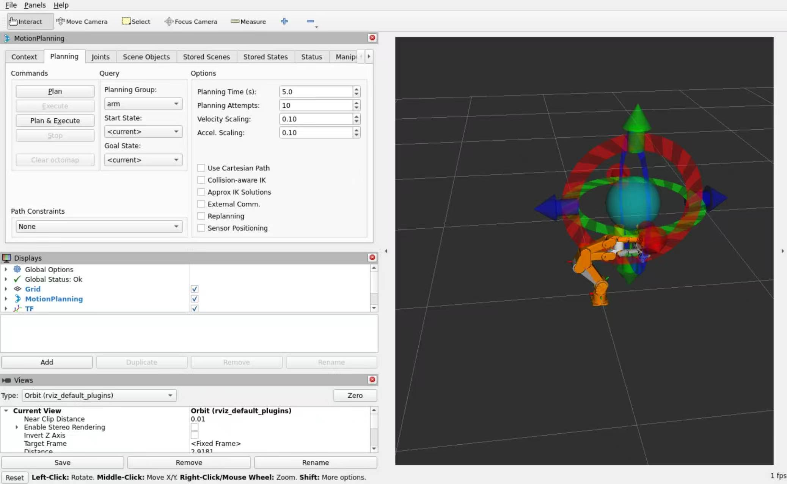

1. Arm Bring-up
先确认灵足 A3 的关节、末端、供电和基础控制链路，保证真实机械臂可以稳定运动。
Manipulation / VLA
灵足 A3 机械臂与 LeRobot VLA pi0.5 调试记录
这条线补上 RabbitRobot 的具身操作能力：用 RobStride EDULITE_A3 / 灵足 A3 机械臂做真实机械臂 bring-up，结合 MoveIt2/RViz 规划界面和 LeRobot VLA pi0.5 调试，为后续“看见目标、理解语言、输出动作”的 VLA 实验准备真实平台。

At A Glance
2026.04 新增真实机械臂调试线，补齐 RabbitRobot 从导航到操作的能力面。
EDULITE A3 使用 RobStride / 灵足 A3 机械臂作为桌面具身操作平台。
LeRobot pi0.5 围绕 VLA 调试准备动作数据、视觉观察和策略接入链路。
MoveIt2 用 RViz / MotionPlanning 界面验证机械臂模型、规划组和运动约束。
VLA Chain
先确认灵足 A3 的关节、末端、供电和基础控制链路，保证真实机械臂可以稳定运动。
通过 MoveIt2 / RViz 规划界面检查 planning group、目标姿态、速度/加速度缩放和路径可达性。
围绕桌面物体、手眼观察和动作轨迹整理后续 LeRobot 需要的数据格式和实验场景。
将视觉观察、语言目标和动作输出接入 LeRobot VLA pi0.5 调试，验证策略到真实机械臂的落地路径。
记录抓取失败、目标偏差、动作抖动和不可达姿态，形成后续训练/评估样例。
Visual Evidence


Research Position
机器狗和 AMR2 解决“到哪里去、怎么导航”的问题；灵足 A3 机械臂则把主线扩展到“到达后如何操作”。这让 RabbitRobot 不只展示移动导航，也开始覆盖视觉语言动作策略、桌面操作和真实机械臂执行。
当前页面记录的是调试阶段：真实机械臂已经进入公开展示，后续再逐步补充 LeRobot 数据采集、pi0.5 策略验证、动作成功/失败案例和可复现实验脚本。
Next Steps
| 阶段 | 目标 | 公开证据 |
|---|---|---|
| Control / Planning | 整理灵足 A3 控制、MoveIt2 planning group 和末端执行器调试记录。 | 启动命令、RViz 配置、规划截图和真实运动视频。 |
| LeRobot Data | 采集视觉帧、动作序列和语言目标，形成可复现实验任务。 | 数据目录、任务说明、失败样例和 replay 记录。 |
| VLA Evaluation | 验证 pi0.5 策略在真实桌面操作中的动作质量和恢复能力。 | 成功率、动作稳定性、偏差分析和典型视频。 |